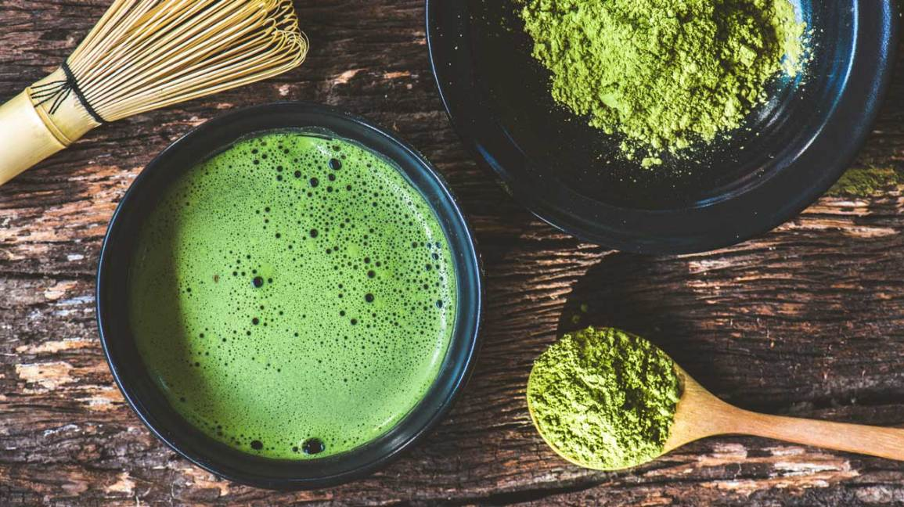
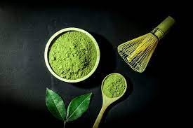
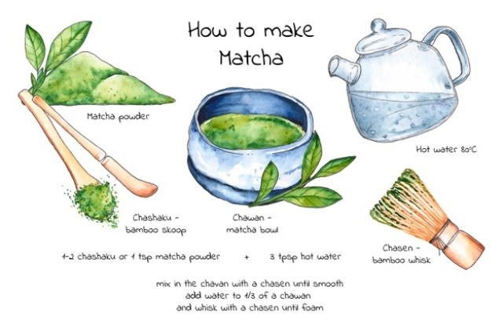
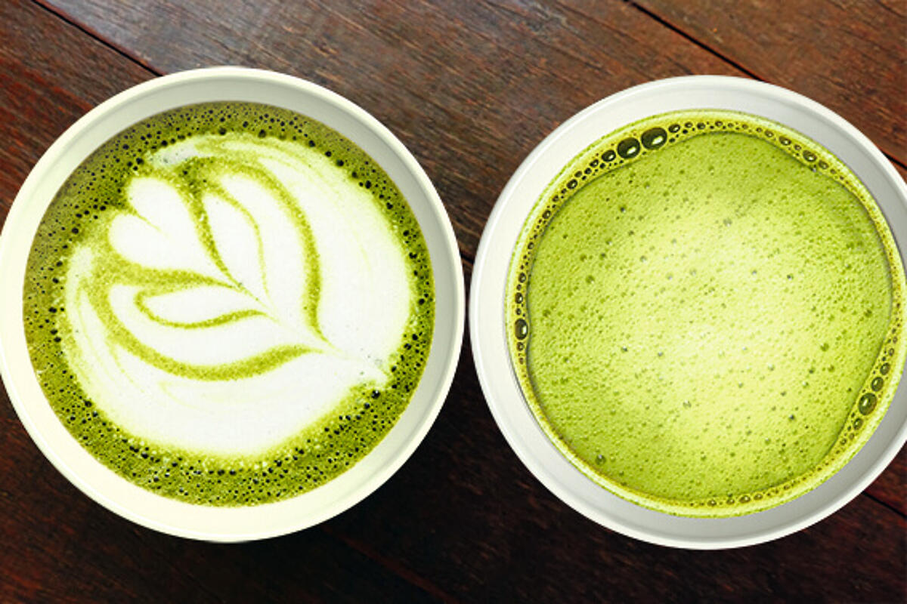
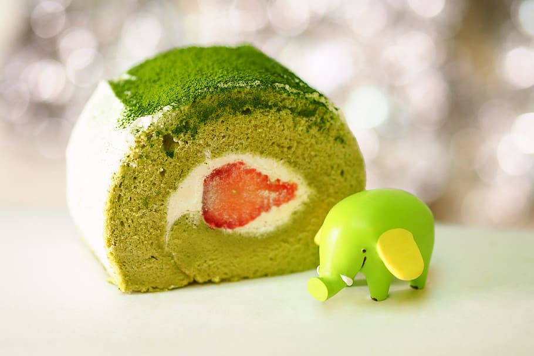

Tentang Matcha

Matcha (抹茶, teh bubuk) adalah teh hijau berbentuk bubuk yang dibuat dari menggiling teh hijau hingga halus seperti tepung.
Selain diminum pada upacara minum teh, matcha digunakan sebagai bahan perisa dan pewarna untuk berbagai jenis makanan,
seperti mochi, soba, es krim, es serut, cokelat, berbagai jenis kue Barat, dan wagashi.
Sejarah Matcha

Kebiasaan minum teh dimulai di Tiongkok pada zaman Dinasti Tang, namun baru menjadi populer pada zaman Dinasti Song. Khasiat dan cara membuat teh dicatat dalam kitab Cha Ching sekitar abad ke-8.
Pada zaman Heian, orang Jepang hanya mengenal Dancha (teh dalam bentuk bulatan seperti bola). Matcha diperkirakan pertama kali dibuat di Tiongkok pada abad ke-10.
Orang Jepang mengenal matcha sejak abad ke-12 (zaman Kamakura) setelah matcha dibawa ke Jepang oleh pendeta Zen aliran Rinzai bernama Eisai.
Cara Pembuatan

Matcha dibuat dari teh hijau yang disebut Tencha. Di perkebunan, tanaman ditutup dengan jerami atau kerai agar daun teh tidak terkena sinar matahari langsung (sama dengan cara pembuatan teh hijau Gyokuro).
Setelah dipetik, daun teh langsung dikukus dan dikeringkan. Teh untuk matcha tidak diremas-remas seperti sewaktu membuat teh hijau jenis Sencha atau Gyokuro.
Alat penggiling dari batu digunakan untuk menggiling daun teh yang sudah kering hingga halus menjadi tepung.
Nah sekarang kamu sudah tau bagaimana cara pembuatan bubuk matcha, menarik bukan? Informasi lain, bubuk matcha biasanya dikonsumsi dengan cara diminum, mau tau gimana cara mengolahnya? Yuk simak langkah-langkah berikut.
Langkah-Langkah Pembuatan Minuman Matcha

- Masukkan Bubuk Matcha ke Dalam Mangkuk Teh
- Tuangkan Air Panas ke Dalam Mangkuk Teh
- Mengaduk Bubuk Matcha dengan Chasen
Olahan Matcha
Minuman

Seperti di penjelasan pembuatan sebelumnya, matcha sering kali diolah menjadi minuman. Namun tidak hanya menjadi minuman seduh namun banyak variasi yang disajikan, seperti matcha latte.
Makanan

Tak hanya minuman bubuk matcha juga diolah menjadi makanan. Makanan yang biasa diolah dari bubuk matcha adalah dessert. Sebagai salah satu contoh adalah Matcha Cake.